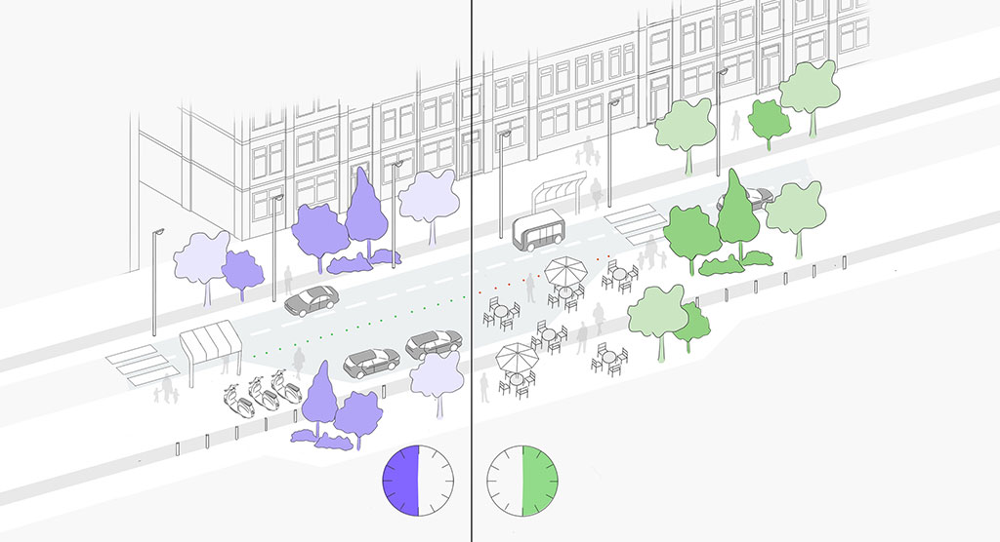

Coding the Curbs
Beschrijving
Coding the Curbs is een start-up die sinds januari 2020 werkt aan het slimmer maken van de steden. Door de ruimte in een stad te 'coderen' is het mogelijk om plekken diverse functies te laten vervullen op verschillende momenten. Denk daarbij aan een parkeerplek die ruimte biedt voor laden & lossen doordeweeks, en voor terrassen in het weekend, de zogenaamde Smart Zones. Via een mobiele en webapplicatie kunnen gebruikers ter plekke een reservering maken van een Smart Zone.
Design Challenge
Ontwikkel en ontwerp aan het interactieve reserveringssysteem van Coding the Curbs. De huidige applicatie laat een overzicht van Smart Zones in een bepaald gebied zien. Via de mobiele en webapplicatie is het mogelijk om reserveringen te doen, te beheren en aan te passen. Om het systeem uit te breiden, willen we gebruikers bij de Smart Zone graag de mogelijkheid geven om zich direct aan te melden - zonder applicatie of account.
User stories
- Een logistieke vervoerder komt aan in de straat bij de Smart Zone om goederen te laden en te lossen. Deze partij maakt nog niet gebruik van ons systeem, maar zou wel graag van de Smart Zone gebruik willen maken. Dit mag immers alleen met een reservering.
- De bestuurder scant de QR code op het Smart Sign met een smartphone. Hiermee komt een landingspagina in beeld waarop de beschikbaarheid van de Smart Zone wordt getoond.
- Als de Smart Zone beschikbaar is, kan de bestuurder een reservering maken door een tijdslot te kiezen en het voertuig kenteken in te voeren.
- Deze reservering wordt vervolgens vastgelegd in de database en getoond op het Smart Sign.
- De bestuurder kan nu gebruik maken van de Smart Zone tijdens het vooraf gekozen tijdblok.